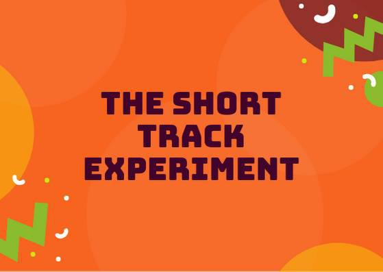

Weekend Highlights: 01 June 2019
There are far too many valuable fixtures to cover all of them (especially in France and the UK, which tend to have multiple tournaments, bootcamps etc all on one weekend), but we also don't want to be so strict as to have just 1 per country. So, we'll be doing the following:
Two highlights a weekend - Sat + (All Weekend); and then a smaller one for Sunday.
Both highlights limited to 1 event per country, with an "extra" event allowed for a different kind of fixture (so, 1 tournament and 1 bootcamp), or if they involve Scottish leagues (since we are the Scottish Roller Derby Blog). Other notability might also allow the extra event - great posters, notable teams, etc. (League birthdays may count as "special" enough, at our discretion ;) )
This weekend is particularly rich in short-format events, with Sur5al, Roller Derby Sevens, and Short Track Roller Derby all happening around the world! There's also a world premiere of the new Street Roller Derby ruleset (in Germany), which is another attempt at producing a simpler, easier-to-officiate version of the game.
In the UK, the Scottish Clause means we're covering 3 different events, as our leagues are all off down south to play derby this weekend!
In a bid to make this list as useful as possible, we've avoided links to Facebook except where noted. (Links to Teams are to non-Facebook resources - Instagram, or actual team pages - we'd strongly recommend that Teams get themselves an actual webpage [we can help host one if you need help]).
Locations are roughly organised East-West (with things before the weekend out sequence at the start).

Sat: Levin, New Zealand
Whenua Fatales Roller Derby League host their annual (Open To All genders) Sur5al tournament, allowing them to run a full 16 team round-robin tournament in 1 day.
Flat Track Stats does not record Sur5al results (and the teams are all mashup) so this is not in FTS
Event starts: 1100 Saturday (doors open)
Venue: Horowhenua Events Centre, 31 Victoria Street, Levin, New Zealand
Sat: Maitland, NSW, Australia
Maitland Roller Derby celebrate their 5th Birthday with a bout against The Northern Beaches, entertainment from Irrawang High School Drum Corp, birthday cake and a licensed bar!
- Maitland Roller Derby versus The Northern Beaches (Curl Curl + environs, NSW)
Event starts: 1800 Saturday (doors open)
Venue: Maitland Federation Basketball Stadium, Maitland, NSW, Australia
Sat-Sun: Sydney, NSW, Australia
Sydney City SMASH host another semi-secret MRDA tournament, Velodrama II, a closed event which they once again can't advertise much due to venue restrictions. (Which is also why we don't have a Facebook event to link to.) This will be a three-team round robin, with MRDA-Sanctioned bouts.
- Teams:
- Sydney City SMASH
- Capital Carnage (Canberra M)
- Brisbane Men's Roller Derby
Event starts: 1400 Saturday (first bout)
Venue: Secret!
Fri-Sun: Helsinki, Finland
Kallio Rolling Rainbow host the 2019 edition of Finland's big WFTDA-sanctioned invitational, the portmanteau Finvitational 2019! With 5 teams, including one from outside Europe, in an almost-round robin (only Middlesbrough versus Calgary is missing from the schedule), this is a packed two-day schedule on the weekend, with two games spilling forward into the Friday in a closed session. As is usual for Finnish events, there will be a livestream.
- Teams:
- Tiger Bay Brawlers (Cardiff)
- Calgary Roller Derby
- Dock City Rollers (Gothenburg)
- Middlesbrough Roller Derby
- Kallio Rolling Rainbow (Helsinki)
Sat-Sun: Prague, Czech Republic
Hard Breaking Dolls continue the trend in Poland for hosting short-format tournaments with an 8 team Roller Derby Sevens tournament. 10 games are packed into one day (meaning that this is probably an elimination tournament, with some consolation bouts), with competitors from across Poland and Central and Eastern Europe!
- Teams:
- Hard Breaking Dolls (Prague)
- Magma Monsters (Erfurt)
- Trash Bunnies (Rollergirls of the Apocalypse | Kaiserslautern)
- Team Apokaliptyczna Trzcina Szczebrzeszyna (Wors Warsaw + Warsaw Hellcats)
- Fearless Bruisers (Innsbruck)
- F.A.R.T. (Augsburg)
- Riga Roller Derby
- Prague City Roller Derby
Flat Track Stats does not track Roller Derby Sevens bouts, so this is not in FTS
Event starts: 1000 Saturday (doors open)
Venue: Sportovní Hala Jižní Město, Květnového vítězství 1554/54, Prague, Czech Republic
Sat: Berlin, Germany
H.O.S.S.A. (Link to Facebook, sadly), the Northern Germany and Netherlands Men's derby collective, host the world's first demonstration of the Street Roller Derby ruleset. Street Roller Derby is yet another ruleset designed to make Roller Derby easier and more convenient to play, with less officiating load, and a simplified ruleset. (In the case of Street Roller Derby: officiating is managed by skaters not currently playing; there's no "Lead Jammer" powers; scoring, like in Short Track is 1 point per pass, not per skater passed; there's also no set duration; a reduced penalty list; and harsher penalty rules (a penalty has you sit out the rest of the jam!) ).
Unfortunately, this ruleset is currently only really being promoted on Facebook. We hope that it will become more accessible to non-Facebook users in future.
- "Teams":
- H.O.S.S.A. (North Germany / Netherlands )
- Team Madstop Roller Derby (Potsdam)
Event starts: 1500 Saturday
Venue: Tempelhofer Feld, Berlin, Germany
Sat: Leipzig, Germany
[FACEBOOK LINK] [FTS LINK D 2] [FTS LINK D 1]
The Riot Rocketz of Leipzig host a double header for this season of the Bundesliga: one fixture for Division 2 (which Leipzig promoted into at the start of this season), and one for Division 1.
- Riot Rocketz (Leipzig) versus Bembeltown Rollergirls (Frankfurt/Main) [Bundesliga D 2]
- Dresden Pioneers versus Ruhrpott Rollergirls (Essen) [Bundesliga D 1]
Event starts: 1200 Saturday (doors open)
Venue: Konradstraße 30, Leipzig, Germany
Sat: Gent, Belgium
GO-GO Gent Roller Derby host Star Track, a mini-bootcamp on Rolla Skate Club's Short Track Roller Derby, followed by a mini-tournament using the rules. Coached by UAE Roller Derby All-Stars` Inga Knee'her!
- 1000 Saturday - Short Track Bootcamp
- 1215 Saturday - closed door Short track mini-tournament
Event starts: 1000 Saturday
Venue: Sporthal Driebeek Gentbrugge, Driebeekstraat 22, Gent, Belgium
Sat: Paris, France
Paris Rollergirls host a 1 day bootcamp for beginner/intermediate level, run by Paris Rollergirls All-stars. This event raises funds to support Paris Rollergirls' attendance at ECDX in the USA.
Event starts: 0900 Saturday
Venue: Gymnase la Plaine, 13 Rue du Général Guillaumat, Paris, France
Sat-Sun: Calais, France
The Black Tagada, Zombeers and Dead Dragibus, the three aspects of Roller Derby Calais, collectively host a day of short-format roller derby, with the return (for the 5th time) of their Hit My Valentine Sur5al tournament. We say "Sur5al tournament", but really this is a whole weekend of Roller Derby surrounding the tournament: both days open with Open Scrimmage with special rules ("reverse derby direction" on Saturday, ), and the Saturday ends with a Junior Derby scrimmage as well.
Flat Track Stats does not list Sur5al tournaments (and in any case, these will be teams created just for this event)
Event starts: 0930 Saturday (doors open)
Venue: Forum Gambetta, 23 Boulevard Gambetta, Calais, France
Sat: Brighton, UK
[FACEBOOK LINK] [FTS LINK 1] [FTS LINK 1]
Brighton Rockers Roller Derby are hosting Glasgow's finest for an A/B double header as part of the Brighton Fringe Festival.
- Brighton Rockers (Brighton A) versus Irn Bruisers (Glasgow A)
- Brighton Rockerbillies (Brighton B) versus Maiden Grrders (Glasgow B)
Event starts: 1400 Saturday (doors open)
Venue: The Dolphin Leisure Centre, Pasture Hill Road, Haywards Heath, UK
Sat: Salford, UK
Arcadia Roller Derby host the fourth of the British Champs Tier 2 North (WFTDA-side) fixtures this year. The hosts, currently second-from-bottom on the leaderboard, face Hallam Hellcats, just one space above them, in a battle for safety from the relegation zone. Meanwhile, Aberdeen's Granite City, currently in that relegation zone, face the imposing Hulls Angels, currently in 2nd place!
- Granite City Roller Derby (Aberdeen) versus Hulls Angels Roller Derby
- Arcadia Roller Derby (Manchester) versus Hallam Hellcats Roller Derby (Sheffield/Hallam)
Event starts: 1015 Saturday (doors open)
Venue: University of Salford Sports Centre, University Road, Salford, Greater Manchester, UK
Sat: Liverpool, UK
Liverpool Roller Birds host the 4th fixture of the British Championships Tier 1 North (WFTDA-side) this season. The hosts currently top the leaderboard for this tier, with an unbroken win record, and it seems likely that this will continue, as they face relegation-zone placed Sheffield Steel. We expect a much closer game between Manchester B and Auld Reekie B; currently near-tied (even with score difference) for 2nd and 3rd place in the board!
- Checkerbroads (Manchester Roller Derby B) versus Auld Reekie Roller Derby Reserves (Edinburgh B)
- Liverpool Roller Birds versus Sheffield Steel Roller Derby
Event starts: 1400 Saturday (doors open)
Venue: Greenbank Sports Academy, Greenbank Lane, Liverpool, UK
Sat-Sun: San Javier, Murcia, Spain
Roller Derby Murcia host an international bout as the Molly Hatchets come over from France.
- Roller Derby Murcia versus Molly Hatchets (Pontarlier)
Event starts: 1700 Saturday
Venue: Avenida Gran Vía de la Manga, Km 12, San Javier, Murcia, Spain
Sat/Sun: Buenos Aires, Argentina
Wonderclan Roller Derby host the first edition of their "Magenta Party", all-night dance and music events. This one has a "bizarre" theme, which we're not quite sure we're translating correctly, but...
Event starts: midnight, Saturday
Venue: Centro Cultural Otra Historia, Estomba 851, Villa Orturzar, Buenos Aires, Argentina
Sat: Osorno, Chile
[FACEBOOK LINK] [FTS LINK 1] [FTS LINK 2] [FTS LINK 3]
Deskarriadas host a 5th birthday celebration, in the form of a triple-header round robin tournament! (The Sunday also has an event, which we'll mention in the Sunday appendix to this update.)
- Teams:
- Deskarriadas (Osorno)
- Diosas Volcánicas (Puerto Montt)
- Indomitas (Valdivia)
Event starts: 0900 Saturday
Venue: Club Deportivo Osorno, Calle Caupolicân 8, Osorno, Chile
Sat: Quito, Ecuador
Forajidas Roller Derby host the first of three open-recruitment and try-derby sessions to help build roller derby in Quito, Ecuador.
Event starts: 0900 Saturday
Venue: Cumandá Parque Urbano, Avenue 24 de Mayo, Quito, Ecuador
Sat-Sun: Querétaro, Mexico
[FACEBOOK LINK] [FTS LINK 1] [FTS LINK 2] [FTS LINK 3]
Querétaro Roller Derby host a triple header of Roller Derby, as a round robin between the hosts' Rock City and teams from neighboring regions!
- Teams:
- Rock City (Querétaro)
- División del Norte (Chihuahua)
- Ovejas Negras (Morelia)
Event starts: 1130 Saturday
Venue: Aud. Ciencias Naturales UAQ, Campus Juriquilla, Querétaro, Mexico
Additionally, these events in North America are of interest due to the attendance of other teams:
Fri-Sun: Milwaukee, WI, USA
Brewcity Bruisers host the 10th edition of their annual invitational, the Midwest BrewHaHa! This is a multi-tier tournament with both MRDA-Sanctioned and WFTDA-Sanctioned bouts, as well as an unsanctioned B-tier for WFTDA leagues. With a huge number of participants, this is simply a tournament for WFTDA ranking, without a structure in itself.
This invitational is of interest to us due to European participation in both the WFTDA-Sanctioned and MRDA-Sanctioned tiers, with France's Lomme Roller Girls, and Belgium's Manneken Beasts playing.
- WFTDA-tier Teams:
- Madison Roller Derby (Madison, WI)
- Team United Roller Derby (Des Moines, IA)
- North Star Roller Derby (Minneapolis, MN) [Tier A and B]
- Toronto Roller Derby (Toronto, ON, Canada)
- Ohio Roller Derby (Colombus, OH) [Tier A and B]
- Winnipeg Roller Derby League (Winnepeg, MB, Canada)
- Tri-City Roller Derby (Waterloo, ON, Canada)
- Gem City Roller Derby (Dayton, OH) [Tier A and B]
- Brewcity Bruisers (Milwaukee, WI) [Tier A and Tier B]
- DC Rollergirls (Washington, D.C.)
- Rage City Rollergirls (Anchorage, AK)
- Lomme Roller Girls (Lomme, France)
- MRDA-tier Teams:
- St. Louis GateKeepers Roller Derby (St Louis, MO)
- Bridgetown Roller Derby (Portland, OR)
- Texas Men’s Roller Derby (Mesquite area, TX)
- Manneken Beasts (Brussels, Belgium)
- YOUR MOM Men’s Roller Derby (Des Moines, IA)
- Chicago Bruise Brothers Roller Derby (Chicago, IL)
Event starts: 0900 Friday (first game)
Venue: UW-Milwaukee Panther Arena, 400 W Klbourn Avenue, Milwaukee, WI, USA
Sat-Sun: Phoenix, AZ, USA
Arizona Roller Derby hosts the return of their Monsoon Madness invitiational, with two simultaneous tournaments - one A team, and one B team. The A team tier is, of course, WFTDA Sanctioned. This is of interest to us due to the attendence of Buenos Aires' `2x4 Roller Derby`_ in both tiers - Team OSOM in A, and Lxs Pibxs in B. As with Finvitational, this is almost a round-robin for both tiers!
- Leagues:
- 2x4 Roller Derby (Buenos Aires, Argentina) [Tier A and B]
- Arizona Roller Derby (Phoenix, AZ) [Tier A and B]
- Dallas Derby Devils (Dallas, TX) [Tier A and B]
- Tampa Roller Derby (Tampa, FL) [Tier A and B]
- Rat City Roller Derby (Shorelina, WA) [Tier A]
Event starts: 0900 Saturday (doors open)
Venue: Ability 360 Sports & Fitness Center, 5031 E Washington St, Phoenix, AZ, USA
Sat-Sun: Los Angeles, CA, USA
Angel City Derby host a Mayday Brawl-B-Q, a two-day tournament with a little less scale than the other USA invitationals above. What makes this one special is the inclusion of a Juniors bout, and the attendance of Baja Roller Derby from Mexico. (Once again, the WFTDA part of the tournament is almost a round-robin, missing just Misery Loves Company versus SoCal).
- Teams:
- Angel City Shore Shots (Los Angeles, CA)
- Baja Roller Derby (Baja California, Mexico)
- Misery Loves Company (Morgan Hill, CA)
- SoCal Derby (San Diego, CA)
- Junior bout:
- Angel City Junior Derby versus Foothill Junior Foxtails (Fontana, CA)
Event starts: 0900 Saturday (doors open)
Venue: 1519 W 139th St, Los Angeles, CA, USA
Guest Post:TNT Roundup - Hull Yeah!
We're happy to present this guest post from Hulls Angels Roller Derby's All Stars Captain, Wilken, on their recent experience at the Aalborg-hosted The Northern Takedown international tournament.
On May 4th 2019 Hulls Angels All-Stars travelled to Denmark to participate in Aalborg Roller Derby’s TNT (The Northern Takedown) Tournament.
This is the 3rd year Aalborg’s Combat Bullies have hosted a tournament and the first year which HARD has competed.
Not only was the tournament the first international tournament HARD has competed in, it was my first tournament as Captain.
Looking at the rosters of the other teams (Belfast Roller Derby, Rockcity Rollers, Cologne’s Graveyard Queens and the hosts Aalborg’s Combat Bullies) it was clear that this was going to be a tough tournament! Not only did we have 3 (!) games on the Saturday we were also only taking 9 skaters.
Nerves aside, the key mantra for this weekend was that we were going to play our game which involved lots of phrases such as ‘butts in holes!’ lurrr and slurrrr’ and ‘back, back, back’ like ducks quacking.
A special shout out goes to my Vice-Captain Milv, who not only organised the bulk of the trip but sorted out a cabin in the woods for us to stay in. There was definitely some Friday 13th vibes going on as we walked into the living room to see massive film posters with superimposed Danish politicians’ faces on them! Anyways! Bunk beds were allocated and a food shop to Aldi was done! Thrill Murray cooked up a super tasty pasta salad so we could carb load ready for the following day.
Aalborg Roller Derby have a fantastic venue and were superb hosts throughout the whole weekend with cracking food provided and a wonderful airy venue.
The first game was against Belfast, and it seemed to fly by! After an anxious start we slowly settled into a rhythm and despite having four(!) foul outs (oops!) we’d cinched our first victory abroad! For me, I was happy with one win as Hulls Angels have never managed to claim a win in Europe before! But our offensive powerhouse Hi-Jaxxx spurred us all on for more as we prepared to take on the top seed of the tournament- Eindhoven’s Rockcity Rollers.

Hulls Angels (in Green) at TNT (Photo by: MiGu)
I feel that it was this game in which we really started to hit our groove. The first game was full of nervous energy, but here we kept calm and focused and on the game plan.
As the game got underway, our newly promoted All Star jammer Dani was smashing through walls as if they weren’t there, Purdy opened up holes for our jammers whilst simultaneously shutting down the opposition. Rockcity were tough but we were living up to our name. At the end of the game we managed to sneak a narrow victory!
Two wins down and I was on cloud nine! But we still had our last game of the day to go. Pressure mounted as we realised that if we won this game, we were guaranteed a medal! Bench Coach Rollo made sure we stayed centred and focused as we prepared to close Saturday against Cologne, who like us had also played three games in one day.
Although both teams were beginning to run low on energy, Cologne went out hard and fast! We really had to dig in and band together. At times the game could have gone either way! But as the clock ticked down and the final whistle was blown, we could hardly believe we had done it. Three wins in one day and a guaranteed a medal!
As we all got back to our creepy cabin, had a hot shower and nursed our aches and pains, it actually dawned on us…. What if? What if we could win this?
Thankfully on the Sunday we only had one game- the hosts Aalborg’s Combat Bullies.

The Hulls Angels Bench! (Photo by: Jen Smith)
Despite Aalborg already having played that day we knew that this would not have given us any advantage. We had been fortunate enough to have watched their previous games and they looked like strong hitters that played a very physical game! We weren’t wrong!
As the game got underway, Aalborg had begun to rack up an uncomfortable lead, so a tactical time out was called by Rollo, to focus. This seemed to do the trick, as we went back on track with a new energy. F-Bomb was closing down any enterprising jammers wanting to sneak up the inside line, Melon Collie was the glue of the team, keeping us together and keeping us calm when the pack started to speed up. Frost Spite was defying the laws of physics as she jammed for what must have felt like jam 200! But it was then that the tide began to turn back in our favour! That gold medal was within sniffing distance!!!
The final whistle blew………. and that was it! We’d done it! And I am pretty sure most of us are still wearing out medals now!
I truly feel that this weekend was a mammoth team effort. We could not have skated as well as we did if it was not for our amazing bench crew; Bench Coach Rollo for winning his first official review! Line Up Manager Ju for not losing her head when we may have been losing ours, and Mansfield Roller Derby’s Dragon’s Jen, who was so supportive and quick with the feedback. You were all completely invaluable. Thank you.
On behalf of Hulls Angels All-Stars, I would also like to thank everyone involved in organising and taking part in The Northern Takedown 2019, the NSOs, referees, announcers, photographers, catering staff, volunteers and Aalborg Roller Derby. For our first European tournament you have set the bar very high! Amanda! We missed you every day!
Overall, it was a weekend of sweat ‘taches, strangling goose poses, wooden giants, paracetamol, sunshine and fun. I can’t wait for the next one! Groove is in the Hull!!
And I won a hat! #winnerwinnerchickendinner

Wilken! (Photo by: Darryl Brooks Photography)
Weekend Highlights: 26 May 2019
The Sunday edition for this weekend is a lot shorter than the main weekend update, but these fixtures are all still true highlights for us.
Both highlights limited to 1 event per country, with an "extra" event allowed for a different kind of fixture (so, 1 tournament and 1 bootcamp), or if they involve Scottish leagues (since we are the Scottish Roller Derby Blog). Other notability might also allow the extra event - great posters, notable teams, etc.
In a bid to make this list as useful as possible, we've avoided links to Facebook except where noted. (Links to Teams are to non-Facebook resources - Instagram, or actual team pages - we'd strongly recommend that Teams get themselves an actual webpage [we can help host one if you need help]).
Locations are roughly organised East-West (with things before the weekend out sequence at the start).
Sun: Westbury, TAS, Australia
Devil State Derby League host an Open To All open scrim, mins-passed skaters welcome (with insurance).
Event starts: 1400 Sunday
Venue: Westbury Sports Centre, 25 Franklin Street, Westbury, TAS, Australia
Sun: Durban, South Africa
Durban Roller Derby host their regular social beach skate event, open to anyone on wheels, and finishing with the "DRD Brekkie Special" for participants at the end of the route!
Event starts: 0800 Sunday (sharp)
Venue: Afro's, 2 OR Thambo Parade, South Beach, Durban, South Africa (start point)
Sun: Freiburg, Germany
[FACEBOOK LINK] [FTS LINK (Bundesliga)] [FTS LINK]
Blockforest Roller Derby host a double-header of games, including a Bundesliga D3 bout!
- Blockforest (Freiburg) versus Bashlorettes (Kassel) [Bundesliga D3]
- RockARollers (Karlsruhe) versus Rhine Rebels (Basel)
Event starts: 1200 Sunday
Venue: Jahnhalle, Lameystraße 4, Freiburg, Germany
Sun: Enschede, Netherlands
Roller Derby Twente host their monthly Sunday open training, where the interested can get a taste of roller derby.
Event starts: 0930 Sunday
Venue: Brug de (C) (Enschede), Schipholtstraat 45, Enschede, Netherlands
Sun: Utrecht, Netherlands
Dom City Roller Derby host a double header of derby for your Sunday. We're interested particularly in the second bout, as we've not seen much of Vagine Regime's Lowlands chapter before this...
- Thunderdoms (Dom City B / Utrecht) versus Ruhrpott Roller Derby B
- Dom City Dolls (Dom City A) versus Vagine Regime Lowlands (Dutch area? LGBT)
VR Lowlands are not listed in FTS at present, so the second bout is not in FTS as a result
Event starts: 1300 Sunday (doors open)
Venue: Manitobadreef 8, Urecht, Netherlands
Sun: Lille, France
[FACEBOOK LINK] [FTS LINK 1] [FTS LINK 2] [FTS LINK 3]
Roller Derby Lille host an exciting triple header of French (and a little Belgian) derby, with all three of their teams on track.
- Switchblade Roller Grrrls (Lille A) versus Duchesses (Nantes A)
- Baronnes Von Schlass (Lille B) versus Atomium Kittens (Brussels B)
- Smashing Machettes (Lille C) versus Canailles (Lutece Destroyeueses C / Paris)
Event starts: 1330 Sunday (first bout)
Venue: 80 Rue de Marquillies, Lille, France
Sun: Caen, France
Roller Derby Caen and Caen Mixed Roller Derby (Facebook link :( ) co-host a Nationale-2 level bootcamp, Open To All genders. This bootcamp is coached by Dédé Froquée and Booty Fool of Roller Derby Caen! As with most bootcamps, the day will end with a scrimmage to test all the skills you've practised.
Event starts: 0930 Sunday
Venue: Halle des Granges Rshc, 15 Rue du Carel, Caen, France
Sun: Oldham, UK
Rainy City Roller Derby host an NSO bootcamp, focused on the skills of score and jam timing positions
- Scorekeeping
- Scoreboard Operating (CRG)
- Jam timing
as well as the responsibilities of being HNSO, including statsbook completion. There will then be a chance to try out your skills officiating a Rainy City scrimmage at the end of the day.
Event starts: 1000 Sunday
Venue: The Thunderdome, 51-53 King St 1st Floor, Oldham, UK
Sun: Santiago, Chile
Metropolitan Roller Derby host the sixth edition of their "Skates and Friends" (Patines y Amigas) open days, with both introductory skating lessons, direct recruitment into Metropolitan, and a host of stalls.
Event starts: 1300 Sunday
Venue: Liceo Paula Jaraquemad, Juárez Larga, Recoleta, Chile
Sun: San José, Costa Rica
Liga Roller Derby Costa Rica host a fundraising bout with themed teams.
- Super Héros versus Villanos [mixed mashup teams]
This bout is not listed in Flat Track Stats, as it's a mashup game.
Event starts: 1300 Sunday (doors open?)
Venue: Polideportivo Aranjuez, De la Iglesia Santa Teresita en BºAranjeuz, San José, Costa Rica
Sun: Mexico City, Mexico
[FACEBOOK LINK] [FTS LINK 1] [FTS LINK 2] [FTS LINK 3]
Mexico City Roller Derby hosts a triple header round robin of Mexican derby.
- Mexico City All Stars (Mexico City A) versus Aniquiladoras Roller Derby (Querétaro / CDMX)
- Mexico City All Stars versus Rock City (Querétaro Roller Derby A?)
- Aniquiladoras versus Rock City
Event starts: 1000 Sunday (doors open)
Venue: Escuela de Formación Deportiva Salvador Allende, Av. Antonio Díaz Soto y Gama, Itzapalapa, Mexico
Weekend Highlights: 25 May 2019
There are far too many valuable fixtures to cover all of them (especially in France and the UK, which tend to have multiple tournaments, bootcamps etc all on one weekend), but we also don't want to be so strict as to have just 1 per country. So, we'll be doing the following:
Two highlights a weekend - Sat + (All Weekend); and then a smaller one for Sunday.
Both highlights limited to 1 event per country, with an "extra" event allowed for a different kind of fixture (so, 1 tournament and 1 bootcamp), or if they involve Scottish leagues (since we are the Scottish Roller Derby Blog). Other notability might also allow the extra event - great posters, notable teams, etc.
The Scottish Clause means that this is a pretty packed update, as no less than 4 leagues or skaters from Scotland are involved in events this weekend! (Unfortunately, the density of tournaments in France once more means that we're having to make a hard choice in picking just one to represent all the activity there, in consequence.)
In a bid to make this list as useful as possible, we've avoided links to Facebook except where noted. (Links to Teams are to non-Facebook resources - Instagram, or actual team pages - we'd strongly recommend that Teams get themselves an actual webpage [we can help host one if you need help]).
Locations are roughly organised East-West (with things before the weekend out sequence at the start).
Sat: Palmerston North, New Zealand
Swamp City Roller Derby (link to Facebook as they seem to have no other presence?) host a double header event with some national teams action.
- Swamp City Roller Rats (Palmerston North) home teams: Trauma Queens versus Quad Bombers
- New Zealand Men's Roller Derby versus mashup team
These bouts are not listed on Flat Track Stats due to the mashup teams not being rateable.
Event starts: 1430 Saturday (doors open)
Venue: Bush Multisport Park, Palmerston North, New Zealand **
Sat-Sun: Albany, WA, Australia
Albany Roller Derby League hosts the second fixture of this year's Boom State Clash, the Western-Australia-wide single-division tournament. This is a two day event, with 6 bouts in total.
- Sat:
- WA Roller Derby (Perth) versus Geraldton Roller Derby
- Dread Pirate Rollers (Kwinana) versus Perth Roller Derby
- Albany Roller Derby League versus Margaret River Roller Derby
- Sun:
- Perth Roller Derby versus Geraldton Roller Derby
- WA Roller Derby versus Albany Roller Derby League
- Margaret River Roller Derby versus Dread Pirate Rollers
Event starts: 1400 Saturday (first bout)
Venue: The Track Albany, Roundhay Street, Gledhow, WA, Australia
Sat-Sun: Tampere, Finland
[FACEBOOK LINK SAT] [FACEBOOK LINK SUN] [FTS LINK SAT] [FTS LINK SUN 1] [FTS LINK SUN 2] [FTS LINK SUN 3]
Tampere Roller Derby and Tampere Rollin' Bros host a two-day Finnish spectacle. On the Saturday, the fifth fixture in the Finnish Nationals (Suomi Cup). On the Sunday, an international MRDA-gender round robin tournament! The Saturday, and possibly the Sunday will also be streamed on the Roller Derby Finland YouTube
- Sat (Suomi Cup):
- Tampere Roller Derby versus Dirty River Roller Derby (Turku)
- Queen Bs (Helsinki Roller Derby B) versus Jyväskylä Roller Derby.
- Kinapori Fistfunkers (Kallio Rolling Rainbow "tournament" / Helsinki) versus Oulu Roller Derby
- Sun ("Brozen" international tournament)
- Tampere Rollin' Bros versus Gothenburg Salty Seamen
- Gothenburg Salty Seamen versus Granite City Brawlers (Aberdeen M)
- Tampere Rollin' Bros versus Granite City Brawlers
Event starts: 1200 Saturday (doors open)
Venue: Kauppi Sports Center, Kuntokatu 17, Tampere, Finland
Sat-Sun: Gdańsk, Poland
Gdańsk Chrome Sirens Roller Derby accelerate from their initial double-header of Short Track Roller Derby to a Polish tournament under those rules! This is a full 10 games of 5-teams round robin tournament, with teams from across Finland, in just one day, thanks to the short-format.
- Teams:
- Tsunami Surfers (Gdańsk Chrome Sirens exhibition)
- Seaquake Hunters (Gdańsk Chrome Sirens exhibition)
- 3City Piranhas Roller Derby (Gdańsk)
- Vratislavia MadChix Roller Squad
- Worst Warsaw Derby Team
These bouts are not currently listed on Flat Track Stats as it does not yet list Short Track bouts or rate them
Event starts: 1200 Saturday (doors open)
Venue: SkateArena, Stadion Energa Gdańsk, ul. Pokoleń Lechii Gdansk, Poland
Sat: Norrköping, Sweden
Norrköping Roller Derby is organising a juniors and adults try-derby-day in collaboration with East Pride. No previous skating experience necessary. After the open-day, the event ends with a "Pride-themed" exhibition bout.
- Junior try-Derby (1200)
- Adult try-Derby (1300)
- "Pride-themed" bout (1500)
Event starts: 1200 Saturday
Venue: Ektorpshallen, Trestegsgatan 4, Norrköping, Sweden
Sat-Sun: Malmö, Sweden
Crime City Rollers host their Level 1 Summer Bootcamp, the basic edition for minimum-skills passed skaters. This bootcamp is Open To All genders, and also contains provision for junior skaters (13+, approval from parent or guardian, confirmation in writing from coach of league that mins-passed and contact-ready). This is a two-day bootcamp... ...but the first day ends with Crime City's bout against Paris Roller Girls, which is free entry for bootcamp attendees!
- Bootcamp [0900 Sat - 1700 Sat]
- Crime City A (Malmö) versus Paris Roller Girls A [1700 Sat]
- Bootcamp [0900 Sun - 1800 Sun]
Event starts: 0900 Saturday
Venue: Kopparbergsgatan 7, Malmö, Sweden
Sat-Sun: Dresden, Germany
Roller Derby Dresden 's "Dresden Derby Days" bootcamp series continues with a Purple Edition Female edition (WFTDA-gender policy?) aimed at nearly-mins-passed or just-mins-passed skaters. This is a two-day bootcamp, covering both on and off-skates skills, and finishing with a scrimmage or equivalent event at the end of Sunday.
Event starts: 0900 Saturday
Venue: Pestalozziplatz 20, Dresden, Germany
Sat: Munich, Germany
Munich Rolling Rebels host a double-header of Roller Derby, where perhaps the most exciting bout is the opener, as Munich's junior derby play Emden/Hamburg's Northern All-Stars! (Munich A then play Berlin's Bear City's Wallbreakers in a Bundesliga Division 1 bout which will also be exciting, but isn't a first for junior derby ;)
- RebelLIONS (Munich J) versus Northern All Stars (Emden/Hamburg J)
- Munich Dynamite (Munich A) versus Bear City Wallbreakers (Berlin X)
Event starts: 1500 Saturday (doors open)
Venue: Städtische Sporthalle Allach, Everbuschstr. 124, Munich, Germany
Sat: Bologna, Italy
[FACEBOOK LINK] [FTS LINK 1] [FTS LINK 2]
Bone-Crushing Hyenas, Bologna's finest Roller Derby league, host a triple-header of Italian Roller Derby.
- OTA "Scrimmage" Derby Moms and Dads themed
- AnguanAss B-side (Vicenza B) versus Stray Beez (Rimini)
- Bone-Crushing Hyenas (Bologna) versus Banshees (Udine)
Event starts: 1000 Saturday (doors open)
Venue: Centro Sportivo Comunale "Pederzini" Calderara Di Reno, Via Giuseppe Garibaldi 8, Calderara Di Reno, Bologna, Italy
Sat: Lucerne, Switzerland
The Hellveticats host a single-header international game against Austria's Dust City!
- Hellveticats (Lucerne) versus Dust City Rollers (Graz)
Event starts: 1600 Saturday (doors open)
Venue: Allmend Mehrzweckhalle, Murmattweg 6, Luzern, Switzerland
Sat-Sun: Belfort, France
The Knee Breakers on Wheels host a two day bootcamp in Belfort, which we believe is Open To All genders (the phrase used in French is "Players Mixte"). This is an intermediate through to advanced level bootcamp coached by Pépé le Punch (Team France 2014,2018).
Event starts: 0900 Saturday
Venue: Gymnase Georges Thurnherr, Rue Ernest Renan, Belfort, France
Sat: London, UK
Team Unicorn Roller Derby host a one-day bootcamp on both blocking and jamming technique coached by Power of Scotland's (and now New Wheeled Order) Optimus Grime. This 4 hour mini-bootcamp is Open To All genders, and open to all experience levels (mins-passed).
Event starts: 1200 Saturday
Venue: City of London Academy, 240 Lynton Road, London, UK
Sat-Sun: Milton Keynes, UK
Rebellion Roller Derby are celebrating 10 years of roller derby in Milton Keynes with a two-day Roller Derby Sevens extravaganza! On Saturday, they're hosting an "intermediate level" WFTDA-gender-policy Sevens tournament; whilst Sunday sees an "advanced level" Open To All genders Sevens tournament! Both days are closed door due to venue restrictions (which is why we also can't give you an address.)
Flat Track Stats currently does not rate Roller Derby Sevens bouts, so none of this is listed there.
Event starts: 1000 Saturday
Venue: An undisclosed location in Milton Keynes.
Sat: Newcastle Upon Tyne, UK
[FACEBOOK LINK] [FTS LINK 1] [FTS LINK 2]
Newcastle Roller Girls host a double header, with Scottish interest, as Glasgow's Mean City travel down to play Newcastle C, whilst Leeds engage in a battle of the B teams in the second bout.
- North Cs (Newcastle C) versus Mean City Women (Mean City W / Glasgow)
- Whippin' Hinnies (Newcastle B) versus Leeds Roller Derby B
Event starts: 1230 Saturday (doors open)
Venue: Benfield Sports Centre, Benfield Road, Newcastle Upon Tyne, UK
Sat: Dundee, Scotland
Dundee Roller Derby host Mansfield Roller Derby for a single-header event against the Bonnie Colliders. You can read more about this bout, and Dundee's recent history in our update earlier in the week.
Event starts: 1450 Saturday (doors open)
Venue: Dundee International Sports Centre, Mains Loan, Dundee, Scotland
Sat: Edinburgh, Scotland
Auld Reekie Roller Derby host a double header event, including a WFTDA Sanctioned bout for their A Team.
- ASTROs (Auld Reekie C / Edinburgh) versus Space Bears (challenge team)
- All-Stars (Auld Reekie A) versus Hellfire Harlots (Nottingham A)
Event starts: 1230 Saturday (doors open)
Venue: Dalkeith Community Campus, 4 Cousland Road, Dalkeith, Scotland
Sat: Brest, France
[FACEBOOK LINK] [FTS LINK 1] [FTS LINK 2] [FTS LINK 3]
B.M.O. Roller Derby Girls host a Tournoi Interceltique, a battle of teams with Celtic history, including As Brigantias from A Coruña, Spain.
- Teams:
- B.M.O. Derby Girls (Brest)
- Roller Derby Rennes
- As Brigantias (A Coruña)
Event starts: 1230 Saturday (doors open)
Venue: Complexe Sportif du Petit Kerzu, 105bis Rue Jules Lesven, Brest, France
Sat-Sun: Madrid, Spain
[FACEBOOK LINK] [FTS LINK 1] [FTS LINK 2]
Roller Derby Madrid hosts a double-header with international roller derby and a chance to see one of the new "hybrid" Teams formed for the ARDE Spanish Nationals for the first time. "Frankensteam" consists of a fusion of skaters from Salamanca, Cáceres and Badalona, and this will be the first time they've played in public!
- Roller Derby Madrid A versus Gothenburg A
- Roller Derby Madrid B versus Frankensteam (Spanish hybrid)
Event starts: 1530 Saturday (first bout?)
Venue: Centro Deportivo Municipal Francisco Fernández Ochoa, C/. las Catorce Olivas s/n, Madrid, Spain
Sat: Reykjavík, Iceland
Roller Derby Iceland host an international bout, as they play Faultline Derby Devilz (all the way from south California)!
- Ragnarök (Iceland) versus Faultline Derby Devilz (San Benito, CA)
Event starts: 1430 Saturday (doors open)
Venue: Hertz Höllin, Reykjavík, Iceland
Sat-Sun: São Paulo, Brazil
Ladies of Helltown host a two-day bootcamp coached by Bogotá Bone Breakers and Team Colombia's Kitsch, covering strategy, technical skating and scrimmage. This is a multi-level bootcamp, with beginner's bootcamp in the Saturday morning, and advanced bootcamp for the rest of Saturday, and Sunday.
- Beginners bootcamp (1000 Sat)
- Advanced bootcamp (1400 Sat - 1400 Sun)
- Scrimmage (1400 Sun)
Event starts: 1000 Saturday
Venue: Centro Esportivo Tietê, Avenida Santos Dumont 843. São Paulo, Brazil
Sat-Sun: Chillán, Chile
[FACEBOOK LINK] [FTS LINK 1] [FTS LINK 2]
Chillanrolleros host the semi-finals of Chilean Men's National tournament, Torneo X Men for 2019. As with previous coverage of the Torneo X Men, there's almost nothing public about this event, and we can't even confirm the venue! (It's since become more clear that this is also the finals of the Torneo X, on the Sunday. Standby for more info as it is made public.)
- Bototos Bandidos (Valparaíso) versus Indomitos (Valdivia M)
- Terror SQuad (Santiago M) versus Chillanrolleros (Chillán M)
- (Losers for 3rd Place) Sunday
- (Winners for 1st Place) Sunday
Event starts: 1200 Sat (first bout)
Venue: ??
Sat-Sun: San José, Costa Rica
Dark Side Roller Derby are part of the "Women's Urban Meeting" in San Jose this Saturday. As well as Roller Derby demonstrations, the event will include all kinds of other activities, including breakdancing, hula workshops and other sports. There will also be merch and "special guests" providing autographs.
Event starts: 0900 Saturday
Venue: Parque La Liberdad, Pattará, San José, Costa Rica
Sat-Sun: Tlalpan, CDMX, Mexico
Fugaz Roller Derby hosts the second edition of the Copa Quinto Sol, a 6 teams, two-day Mexican tournament arranged as a Group stage (2 Groups of three) followed by placement bouts between the Groups. (Position N in Groups 1 and 2 play for overall position 2N-1).
- Group A
- Aguamalas (La Paz)
- Fugaz (Toluca/CDMX)
- Roller Derby Mérida Yucatán
- Group B
- Reinas Rojas (Cancùn)
- Medusas (Pachuca)
- Vipers (Tijuana)
Event starts: 0800 Saturday (doors open / registration)
Venue: Centro Deportivo Villa Olimpica, Avenida Insurgentes Sur, Tlalpan, Distro Federal, Mexico
SPECIAL MENTION TO, ALSO, THESE NORTH AMERICAN TOURNAMENTS, OF INTEREST AS THEY FEATURE EUROPEAN COMPETITORS:
Sat-Sun: Rome, NY, USA
Mohawk Valley Roller Derby hosts the Mohawk Valley Cup 2019, the regular Men's Roller Derby tournament sanctioned by MRDA. This is of interest to us due to the attendance of Brussels' Manneken Beasts.
-
Competing:
- Chinook City Roller Derby
- Flour City Fear
- Toronto Men's Roller Derby
- Mass Maelstrom
- Twin Cities Terrors
- Montréal Roller Derby Masculin
- Manneken Beasts
- Mohawk Valley Roller Derby
Event starts: 0900 Saturday
Venue: John F. Kennedy Arena, 500 West Embargo St, Rome, NY, USA
Dundee Roller Derby - Midseason and Mansfield
With home games in Dundee coming few this season, DRDs Bonnie Colliders have only hosted Auld Reekie Roller Derby's C team, ASTROs last month. The two sides had played each other back in 2016, with 2 wins for Colliders to ASTRO's 1. However the inherent nature of constantly altering B/C teams rosters led to this match up being two brand new teams facing each other.
Shiv #165 (Colliders Co-Captain)
- Shiv #165 (Colliders Co-Captain)
- “The ASTROs game was a tough season opener for us and even though we lost we had a fantastic time out on track! We learned a lot about how we work together as a team and it gave us some areas to focus our training on going forward”
A closely fought game, with the new Colliders being led by Shiv #165 and Macfarlane #606, showed a settling in period for the new Dundee roster with the ASTROs side taking the win [221 v 166]. With a month of training and working together under their belt the Colliders are looking forward to hosting Mansfield Roller derby on the 25th May at the DISC in Dundee!
- Macfarlane #606 (Colliders Co-Captain)
- “Playing against the Astros was a good way to start our season. We knew they would be a challenge but we learned a lot from it.”
- Shiv #165
- “We’re going into the Mansfield game with a fourteen skater roster which is pretty much unheard of for Dundee! We’ve been working so hard at training and I’m hoping that we see all that hard work come together in the game.”
A previous match up, again back in 2016, saw the Colliders take on Mansfield B to a 275 v 75 victory. What will 2019 Collider roster have to offer on the against the Mansfield A side? Will Mansfield return South triumphant?
Macfarlane #606 (Colliders Co-Captain)
- Macfarlane #606
- “We are looking forward to the game this weekend. We've had plenty of time to train together for this game and we are really feeling the benefit of this.”
With this single header opening its doors at 2:50, and the action starting at 3pm, you are ensured some fantastic derby! For more information on the upcoming event, visit the facebook page!
Date: 25/05/2019
Where: Dundee DISC
Time: 2:50pm
Event page: https://www.facebook.com/events/881902268809143/
Upcoming European Short Track Events (June-August 2019)
Note, in accordance with our general policy, team links here are to their website, if they have one, and instagram if not. We try to avoid linking to Facebook if possible, except for Events.
The Short Track Roller Derby events calendar is building for the year already, and there's a lot of things to talk about, so we're bringing you a new edition of the Short Track News roundup earlier than we expected to!
Our first development is that Rolla Skate Club now host a dedicated Short Track Roller Derby Resources page, with the rules and other info. (We know that it's also set to gain more resources, too, as they're produced.)

The new Rolla Skate Club "Short Track Resources page"!
In the USA, the biggest Short Track event upcoming is probably the Rollercon event series. Building on their appearance at the last Rollercon (the public debut of the ruleset, in fact),
- Rollercon 2019 will feature multiple items:
- "AA-level" Short Track Exhibition Game "Short Skirts versus Sleeves" (20 July, 20:45)
- 2 MVP-pass holder on Skates sessions on Short Track with Rolla Skate Club [19 July 16:50, 20 Jul 18:00]
- Open Track Scrimmage for Short Track (19 July, 20:00)
If you're at Rollercon from the 17th July, then we encourage you to go check it out!
Many other US and Canadian teams continue to use Short Track Roller Derby; Pittsburgh Short Track Roller Derby, in particular, continue to be a purely Short Track league, and are holding regular open training sessions.
In Canada, we know that Nelson Killjoys of British Columbia, will be hosting a tournament for 6 teams, at some point later this year.
In Alberta, Canada, Fort McMurray Roller Derby are planning to use short track rules for their home teams season, allowing them to support more home teams with their current roster. (Scheduled for around October 2019)
The first edition of Iru Navarro's fanzine, including an introduction to Short Track rules.
Further afield, Latin America continues to explore the Short Track ruleset [an Argentine fanzine is covering the rules in translation issue by issue], and in South Korea, OH! Roller Derby (Facebook link) are hosting scrimmages using the ruleset.
In South Africa, Cape Town Rollergirls are planning a second Short Track event after the success of their first on the 26th April. Whilst not announced officially yet, the 8th June is the provisional date.

Calendar of events (blue - games, yellow - Rollercon, purple - bootcamps and workshops)
In Europe, however, there's a bunch of exciting workshops / bootcamps / tournaments coming up:
Literally next weekend: Gdańsk Chrome Sirens Roller Derby are following up on the previous success of a Short-Track double header with a Polish Short Track Tournament.
- 25 May
-
- Vratislavia MadChix Roller Squad
- Worst Warsaw Derby Team
- 3City Piranhas Roller Derby (Gdańsk)
- Gdańsk Chrome Sirens Roller Derby [two teams]
- mystery 6th team
This will be a full round-robin tournament, with 10 bouts to decide the overall winner. Entry will be free - and the whole event will be livestreamed at https://www.twitch.tv/chromesirens

In the very near future, GO-GO Gent Roller Derby host a special edition of Star Track (their SKOD spin-off) with a Short Track focus.
- 1 - 2 June 2019
-
Coached by UAE Roller Derby All-Stars' Inga Knee'her, the current design has:
- 1st June:
- Morning session: Short Track Rules & Drills with Inga Knee'her and UAE Roller Derby (including low-contact and other variants, potentially)
- Afternoon session: Short Track mini-tournaments
- 2nd June:
- Short Track mini-tournament continues
- 1st June:
Changes for this structure are still possible, depending on attendance.
Russia continues its promotion of Short Track with multiple events:
- 19 June
- Public Short Track Roller Derby exhibition bout (St-Petersburg Roller Derby)
- In August
- public Short Track Roller Derby bout (Baltic Witches (St-Petersburg C) versus Raptors Derby Moscow)

Next up, the
- 13 July
-
ALL IN Roller Derby Community host their "Short Track Experiment"
A 1 day workshop exploring the Short Track ruleset - including low-contact rules as well as the full contact standard. Includes OTA and WFTDA-gender policy games (open to not-quite-mins-passed-but-internal-scrim-ready skaters for the Low Contact games). Includes time for discussion between games, and a low-pressure environment.
This will run from midday to 5pm in the Ramgarhia Sikh Sport Centre, Leeds.
Also on the
- 13 July
-
No event yet
Bad Rangers Poznań are also planning a Short Track fixture, details to be confirmed.
Perhaps the most exciting UK-based event is planned for
- 16-18 August
- No event yet
Save the date, and we'll bring you more info on this event when we can confirm it (which will hopefully be soon)!
Weekend Highlights: 19 May 2019
This is the Sunday edition of this weekend's highlights, with just a few entries. As always the hardest picks are France and the UK, who tend to have so many high quality events on at once that picking just one is almost impossible.
We're sticking to our limit of 1 event per country, with an "extra" event allowed for a different kind of fixture (so, 1 tournament and 1 bootcamp), or if they involve Scottish leagues (since we are the Scottish Roller Derby Blog). Other notability might also allow the extra event - great posters, notable teams, etc.
In a bid to make this list as useful as possible, we've avoided links to Facebook except where noted. (Links to Teams are to non-Facebook resources - Instagram, or actual team pages - we'd strongly recommend that Teams get themselves an actual webpage [we can help host one if you need help]).
Locations are roughly organised East-West (with things before the weekend out sequence at the start).
Sun: Maylands, WA, Australia
WA Roller Derby (WARD) are prepping for the upcoming Royal Rumble by hosting an open scrim against a challenge team drawn from the skaters of West Australia. Spectators welcome by donation.
- WARDS of the Skate (WARD A) versus WA (pick-up team)
This fixture is not listed on Flat Track Stats as one team is a hybrid, unrateable, team.
Event starts: 1600 Sunday (doors open)
Venue: The Rise, 28 Eighth Avenue, Maylands, WA, Australia
Sun: Durban, South Africa
Durban Roller Derby hosts a "Learn to Skate" day, which also doubles as an open day for any interested skaters.
Event starts: 1000 Sunday
Venue: Watercrest Mall, 141 Inanda Road, Durban, SA
Sun: Vicenza, Italy
Manneken Beasts are on a coaching tour (we're a little concerned by their obvious love for late 1990s dance, given they're calling it "The VengaBeast on Tour"), and we're calling out this Italian part of it to represent both parts.
This is an Open To All genders bootcamp at intermediate level, coached by Track Vader (blocking), Trick or Threat (jamming), Goofy (jamming).
All profits from the coaching tour support Manneken Beasts even larger plans for a competitive tour of the USA, which you can also support on GoFundMe.
Event starts: 0915 Sunday (registration)
Venue: Pattindromo Comunale Viale Arturo Ferrarin 67, Vicenza, Italy
Sun: Cologne, Germany
Cologne Roller Derby host a single header bout against a hybrid team from Bielefeld and Oberhausen.
- Unbreakabellas (Cologne B) versus hybrid team (Bashing Battlecats (Bielefeld) + Mine Monsters (Oberhausen))
This fixture is not listed on Flat Track Stats as one team is a hybrid, unrateable, team.
Event starts: 1330 Sunday (doors open)
Venue: Sporthalle, Everhardstraße 50, Köln, Germany
Sun: Antwerp, Belgium
Antwerp Roller Derby hosts a B-teams battle against one of the rising leagues in French derby, Lomme Roller Girls!
- Pack of Destruction (Antwerp B) versus Glorious Batardes (Lomme B)
Event starts: 1100? Sunday
Venue: Cafetaria Sporthal Kiel, Antwerp, Belgium
Sun: Saint-Gratien, France
[FACEBOOK LINK] [FTS LINK 1] [FTS LINK 2]
Roller Derby Panthers host a double header of derby for their A and B teams. (To be honest, there's a lot of great derby in France this Sunday, and we decided which one to pick partly on the team names.)
- Panthers Graou (RDP A / Saint-Gratien) versus Petites Morts (Bordeaux)
- Panthers Miaou (RDP B) versus Bloody Angels (Melun)
Event starts: 1400 Sunday (doors open)
Venue: 28 Rue du Picolo, Saint-Gratien, France
Sun: Grimsby, UK
Grimsby Roller Derby host the next fixtures of the British Championships Tier 3 East (WFTDA-side). For the hosts, this is a battle for the the top of the league table, as they play current top-spot-holders Deathrow Hull. In the other bout, Roller Derby Leicester will be hoping to pick up a second win against York Minxters to avoid the bottom of the table and potential relegation.
- York Minxters versus Roller Derby Leicester
- Grim Reavers (Grimsby A) versus Deathrow Hull
Event starts: 1145 Sunday (doors open)
Venue: Grimsby Leisure Centre, Cromwell Road, Grimsby, UK
Sun: Oldham, UK
Rainy City Roller Derby host an All-Stars coached jammer bootcamp, covering everything you'd expect: individual skills, techniques for dealing with walls (evasion or otherwise), and working with offense. This bootcamp is 16+ WFTDA-gender policy, mins-passed only.
Event starts: 1100 Sunday
Venue: The Thunderdome, 51-53 King St 1st Flor, Oldham, UK
Sun: Valencia, Spain
Rayo Dockers host a "social day" on Women's Sports, including both a round table session with women athletes, and a "dynamic workshop" on LGBTQ and queer theory.
Event starts: 1200 Sunday (doors open)
Venue: Inciativa Dàhlia, camino viejo de Xirivella, 23 bajo, Valencia, Spain
ARDE launch a new era of Spanish Championships
Whilst it's not true for every country, the history of National Tournaments in Roller Derby is often tied up with legitimate organisation and representation within that nation. (For example: the French Championnat is, in a sense, what it is, because it is backed by the FFRS).
Whilst Spain has had a national tournament since 2016, this was run by the Spanish Skating Federation. That body, as with several around the world, does not well reflect the interests of Roller Derby, having a particular alignment with World Skate; this extended to them not providing any support to the Spanish national team at the last World Cup in 2018.
As such, attendance at the Campeonatos has been dropping steadily since they were initiated.
From last year, however, Roller Derby in Spain has legitimate representation. The Asociación de Roller Derby de España (ARDE - which also nicely means implies "fire" and "passion") represents the WFTDA-rules and WFTDA-aligned teams in Spain (of all gender and age policies).
This year, then, there is finally a more representative Spanish National tournament, backed by ARDE. With ARDE's greater inclusion, there's enough teams to require two divisions for the WFTDA-gender tier; a single division Men's tier will also provide a MRDA-gender champion.
Leagues are allowed to submit multiple teams (A and B teams, for example), with the restriction that only one team is allowed per division, and no skaters can be shared between team rosters. Given that only the WFTDA-gender tier has two divisions, this effectively means that we can expect only WFTDA teams to have more than one entry.
Flat Track Stats' Global rating is used to seed these divisions for 2019.

Map of teams in the ARDE championships, coloured by division/gender-policy. (Red = Division 1 WFTDA, Yellow = Division 2 WFTDA, Dark Red = Division 1 MRDA). Hybrid teams are indicated by linking of the stars for their constituent teams.
Division 1 (WFTDA) [8-9 Jun, plus final 7 July] [Valencia]
The Division 1 teams competing are pretty much the ones you would expect. The top rated teams in FTS Europe from Spain, they consist of:
- Roller Derby Madrid A
- Barcelona Roller Derby “All Stars”
- Rayo Dockers (Valencia)
- Black Thunders (Madrid)
- Sicarias de Cierzo (Zaragoza)
Division 1 will run as a full round-robin tournament, with those 10 games deciding the candidates for the Championship game to be held on the 7th of July in Madrid.

Division 2 (WFTDA) [22-23 June plus final 7 July?] [Murcia]
Division 2 is a little more complex. As with some of the teams in other National tournaments (for example, France's Championnat), we have a few "hybrid" teams competing, pooling the resources of several leagues into a single roster. The list is rounded out by two B teams from Division 1 competitors: Roller Derby Madrid and Valencia's Rayo Dockers competing in both divisions.
There are a mix of "city" and "regional" teams in this division: Asturias is an "autonomous community" (something between a county and a nation in UK terms), and the Bonitas del Norte effectively represent the remaining autonomous communities to their east on the north coast (Cantabria and Navarre are actual autonomous communities, and Bilbao and Donostia/San Sebastián together represent the largest cities within the Basque Country). (The Frankensteam are less easy to categorise, as Salamanca and Cáceres effectively represent the western border of Spain with Portugal, whilst Badalona is over near Barcelona to the east of the country.)
- Roller Derby Madrid B
- As Brigantias (A Coruña)
- Frankensteam (Salamanca / Bad'n'Roller (Badalona) / Cáceres)
- Bonitas del Norte (Cantabria / Botxo Killers (Bilbao) / Easo Avengers (Donostia/San Sebastián) / Nafarriors (Navarre) )
- Rayo B-lockers (Rayo Dockers B / Valencia)
- La Güestia Roller Derby (Asturias)
- Roller Derby Murcia
- Vigo Roller Derby
With 8 teams, a full round-robin tournament, as used in Division 1, would require 28 games. Without multiple tracks, this won't fit in the two days of the Division 2 fixture. We expect to hear more about the Division 2 competitive structure in due course.
In a way, the most interesting parts of this Division are the hybrid teams: merging skaters across leagues can be difficult, especially getting them to gel into one force; in particular, we're watching Frankensteam to see how the distance between their western and eastern halves affects coordination.
Division 1 (MRDA) [6-7 July] [Madrid]
There are no Facebook Events or FTS entries for this tournament as yet
As with the WFTDA-gender Division 1, the MRDA-gender Division 1 is fairly predictable, with the top 3 teams from FTS Europe represented:
- MadRiders Roller Derby (Madrid M)
- Lobishommes Men's Roller Derby (Galicia M)
- Easo Hooks Roller Derby (Donostia/San Sebastián M)
We'd assume that this will be a full round robin, as only three games will be needed to establish a champion. With MadRiders the most travelled of the teams, and the highest rated, we'd put them odds-on for the championship.
Weekend Highlights: 18 May 2019
There are far too many valuable fixtures to cover all of them (especially in France and the UK, which tend to have multiple tournaments, bootcamps etc all on one weekend), but we also don't want to be so strict as to have just 1 per country. So, we'll be doing the following:
Two highlights a weekend - Sat + (All Weekend); and then a smaller one for Sunday.
Both highlights limited to 1 event per country, with an "extra" event allowed for a different kind of fixture (so, 1 tournament and 1 bootcamp), or if they involve Scottish leagues (since we are the Scottish Roller Derby Blog). Other notability might also allow the extra event - great posters, notable teams, etc.
In a bid to make this list as useful as possible, we've avoided links to Facebook except where noted. (Links to Teams are to non-Facebook resources - Instagram, or actual team pages - we'd strongly recommend that Teams get themselves an actual webpage [we can help host one if you need help]).
Locations are roughly organised East-West (with things before the weekend out sequence at the start).
Sat: Auckland, New Zealand
Pirate City Rollers host their first inter-league of the 2019 season with a double header. This is the first ever inter-league double header for these teams, so there's some history here. The teams here are all special mixed teams, as this is all for fun.
- Te Taniwha (Pirate City mixed/ Auckland) versus Bat City (Hellminton Roller Ghouls mixed / Hamilton)
- Apex Predators (Pirate City mixed) versus Sparks (Auckland Roller Derby League mixed)
This event is not listed in Flat Track Stats, as the teams are also not listed there.
Event starts: 1700 Saturday (doors open)
Venue: The Trusts Arena, 65-67 Central Park Drive, Auckland, New Zealand
Sat-Sun: Sydney, NSW, Australia
[FTS LINK 1] [FTS LINK 2] [FTS LINK 3] [FTS LINK 4] [FTS LINK 5]
Sydney City SMASH host 5 games of Australian Men's Roller Derby over the weekend. Due to venue limitations, these are closed games, with no events on social media.
- Teams competing:
- Sydney City SMASH (Sydney M)
- Capital Carnage (Varsity M / Canberra)
- Tasmanian Men's Roller Derby
- Men of Steel (Newcastle M)
Event starts: 1400 Saturday
Venue: Dunc Gray Velodrome, Bass Hill, Sydney, NSW, Australia
Sat: Pyeongtaek, South Korea
OH! Roller Derby [Facebook link, as no other social media] (the only active team in South Korea, at the USAG Humphreys base) host an open scrimmage - listed here as it's using Short Track Roller Derby rules.
Event starts: 1200 Saturday
Venue: Turner Fitness Centre, USAG Humphreys, Pyeongtaek-si, Gyeonggi-do, South Korea
Sat: Uppsala, Sweden
Jackdaw City Rollers host Karlstad's Sun City Rollers for a bout, introduced with a quote from Dracula, so who knows what's going on here...
- BURDS (Jackdaw City B / Uppsala) versus Sun City Rollers (Karlstad)
Event starts: 1300 Saturday (doors open)
Venue: Fyrishov A-Hallen, Uppsala, Sweden
Sat: Roskilde, Denmark
Roskilde Roller Derby host a single-day 6-team Roller Derby Sevens tournament, with teams from across Denmark. The tournament is structured as a two-group initial phase, with "final placement" games between the equivalently-placed teams in each group for final rank. (So, the "winners" of each group play for tournament #1, and so on down, pairwise.)
- Group 1
- Copenhagen Ladybugs (Copenhagen OTA)
- Aalborg Combat Bullies
- Northern Lightning (Groningen W)
- Group 2
- Helltown Hellcats (Helsingborg)
- O-Town Roller Derby (Odense)
- Roskilde Roller Derby
This tournament is not listed on Flat Track Stats, as they do not collect Roller Derby Sevens tournament stats by default
Event starts: 0930 Saturday (doors open)
Venue: Himmelev Hallen, Herregårdsvej 42, Roskilde, Denmark
Sat: Bremen, Germany
Bremen Meatgrinders host a Bundesliga D3 North game - the first of the 2019 season - as part of a double header, followed by public scrimmage for newer skaters to gain experience.
- Bremen Meatgrinders versus Zombie Rollergirlz (Münster) [Bundesliga D3N]
Event starts: 1430 Saturday (doors open)
Venue: Eissporthalle Paradice, Waller Heerstr. 293a, Bremen, Germany
Sat: Geneva, Switzerland
Genève Roller Derby United co-host a triple header event with Lausanne's Rolling Furies!
- Wild Wild Fresh (rookie Geneva skaters?) versus d'autres Fresh (other rookie skaters)
- Mères Royaume (Genève A) versus Hellveticats (Luzern)
- Rolling Furies (Lausanne) versus UB Suisse (open subs Swiss team)
Flat Track Stats link is for Genève v Luzern, as the others are not rateable bouts
Event starts: 1200 Saturday (doors open)
Venue: Chemin du Fort-de-l'ecluse 1, Genève, Switzerland
Sat: Floreffe, Belgium
[FACEBOOK LINK] [FTS LINK 1] [FTS LINK 2] [FTS LINK 3]
Namur Roller Girls host a triple-header of Roller derby featuring three of the four teams in Namur.
- Glorious Basterds (Namur M) versus Mons'ter Munch Derby Dudes (Mons M)
- Namur Roller Girls A versus Ruhrpott Roller Derby
- Namur Roller Girls C versus Les Nasty Pecheresses (Montreuil)
Event starts: 1200 Saturday (doors open)
Venue: Centre Sportif Communal de Floreffe, rue Joseph Hanse, Floreffe, Belgium
Sat: Aberdeen, Scotland
Granite City Roller Derby host a single header against Vagine Regime UK. Cake stall sales for this game support Mermaids, the charity supporting transgender and gender variant children and young people.
- Northern Fights (Granite City A/Aberdeen) versus Vagine Regime UK ()
Event starts: 1230 Saturday (doors open)
Venue: Beach Leisure Centre, Esplanade, Sea Beach, Aberdeen, Scotland
Sat-Sun: Newcastle, UK
Newcastle Junior Roller Derby host a single-header bout against Lincolnshire's own junior derby, Lincolnshire Bombinos (with a few friends helping them out)! Entry is free, with donations gratefully received.
- Newcastle Junior Roller Derby versus Lincolnshire Bombinos
Newcastle Juniors are not listed in Flat Track Stats at present
Event starts: 1300 Saturday (doors open)
Venue: Benfield Sports Centre, Benfield Road, Newcastle Upon Tyne, UK
Sat-Sun: Rennes, France
Les Bonhommes host the second fixture of the Men's Nationale 1 division of the Championnat de France. "You May Win, Championship Edition", two days, and 8 bouts of roller derby.
- Sat:
- Les Calebrutes (Paris M) versus Knocking Balls (Creil M)
- Les Menneles (Strasbourg M) versus Les Bonhommes (Rennes M)
- RATM (Arras M) versus Les Calebrutes
- Les Menneles versus Les Marquis de Sabre (Lille M)
- Sun:
- RATM vs Les Bonhommes
- Les Menneles vs Knocking balls
- Les Calebrutes vs Les Bonhommes
- Knocking balls vs Les marquis de Sabre
Event starts: 1000 Saturday (doors open)
Venue: Complex Sportif es Chalais, rue du Bosphore, Rennes, France
Sat-Sun: Barcelona, Spain
Barcelona Roller Derby host the 4th edition of Brawlcelona, their annual international tournament. This year's edition is a four-teams round robin tournament over two days, featuring:
- Ingles de Acero (Barcelona A)
- Les Quads (La Boucherie de Paris A)
- London Rockin' Rollers
- Limerick Roller Derby
Event starts: 0900 Saturday (doors open day 1)
Venue: CEM Trinitat Vella, Via de Bàrcino 84, Barcelona, Spain
Sat-Sun: Curitiba, Brazil
[FACEBOOK LINK] [FTS LINK 1] [FTS LINK 2] [FTS LINK 3]
Blue Jay Rollers host a two-day Roller Derby extravaganza, Derbyzarro, with a fun event on the Saturday, and a Brazilian triple-header on the Sunday. No entry is charged for this weekend, and the hosts also provide accommodation in their venue for just $10!
- Sat:
- Derby games (Pin the Tail)
- Roller Relay
- Non-contact bout
- Sun:
- <s>Blue Jay Rollers (Curitiba) versus Thunder Rats Derby Squad (Santos)</s>
- Blue Jay Rollers versus Iron Ladies Roller Derby (Blumenau)
- <s>Thunder Rats Derby Squad versus Iron Ladies Roller Derby</s>
Note, due to problems with Thunder Rats attending the event, their games were replaced with games against a pick-up team from skaters present
Event starts: 0900 Saturday (doors open)
Venue: Sei São José dos Pinhais, Rua Maria Helena 707, Bairro São Pedro, São José dos Pinhais, Brazil
Sat: Mar del Plata, Argentina
MDQueens host a single-header event, with free entry! As with a lot of these Argentine bouts, there's also a raffle with prizes!
- MDQueens (Mar del Plata) versus Rebeldes del Asfalto (Mar del Plata)
Event starts: 1900 Saturday (doors open)
Venue: Club Atlético Mar del Plata, Rivadivia 3358, Mar del Plata, Argentina
Sat-Sun: Copa TNT Mexico
EMEXRD host the 2019 edition of the Copa TNT (one of two TNT cups in the Roller Derby world, the other one being in Aalborg, a few weeks earlier). Mexico's Copa TNT is a two-day tournament with WFTDA-gender and MRDA-gender tiers, competing in parallel single-elimination tournaments.
- WFTDA-gender tier:
- Quimeras Roller Derby (LRDCM / Mexico City)
- Ovejas Negras (Michoacán)
- Discordias ( )
- Mexico City Roller Derby
- Minervas (Guadalajara)
- MRDA-gender tier:
- Berserkers (Xalapa M)
- All Blacks ( )
- Disorder RD (EMEXRD M/ Mexico City)
- Bastardos (San Luis Potosí M)
- Minotauros (LRDCM M/ Mexico City)
Event starts: 0800 Saturday (first bout!)
Venue: Deportivo Morelos, CDMX, Mexico
Special mention to, also, these North American tournaments, of interest as they feature European competitors:
Fri-Sun: Santa Cruz, CA, USA
The 2019 Boardwalk Empire tournament, hosted by Santa Cruz Derby Girls . This is a WFTDA Invitational style tournament for Division 1 teams (no "winner", just a bunch of games for WFTDA rating)
Featuring:
- Angel City Derby
- Arizona Roller Derby
- Bay Area Derby
- Minnesota RollerGirls
- Philly Roller Derby
- Rat City Roller Derby
- Santa Cruz Derby Girls
- Harbor Hellcats
- Stockholm Roller Derby
and
- Texas Rollergirls
Fri-Sun: Saint-Anselme, Québec, Canada
The 2019 La Foire du Nord tournament, hosted by Roller Derby Québec. This is the first edition of this international WFTDA Invitational.
Featuring:
- Forest City Roller Derby
- Roller Derby Québec
- CT Roller Derby
- Oslo Roller Derby
- Penn Jersey Roller Derby
- Lehigh Valley Roller Derby
- Twin State Derby
and
- Anchor City Rollers
Weekend Highlights: 12 May 2019
This is the Sunday addendum to this weekend's highlights, with even more roller derby of all kinds.
Remember: if you want to ensure your event has a chance of being highlighted, you can contact us via Facebook, Instagram, Email or WeChat to remind us. (If your website has a useful RSS or other syndication feed, please tell us about it, too.) We highlight events for various reasons, not just because they "big", so don't be shy.
In a bid to make this list as useful as possible, we've avoided links to Facebook except where noted. (Links to Teams are to non-Facebook resources - Instagram, or actual team pages - we'd strongly recommend that Teams get themselves an actual webpage [we can help host one if you need help]).
Locations are roughly organised East-West (with things before the weekend out sequence at the start).
Sun: Lanús, Argentina
Atomic Bombs Roller Derby host a double header of Roller Derby, as they take on a joint, mixed team from Colmena Roller Derby and Cerberos Roller Derby (of Remedios de Escalada), who are punning a little with their mixed team name, followed by a mixed gender bout with Inka Roller Derby playing an open subscription team (Chambelanes). [As far as we can tell, the entire theme of this double header is a gentle mocking of the "Sweet sixteen"/"debutante ball" event.]
- Atomix (Atomic Bombs O / Lanús) versus Colmenos&Cerberas (Remedios de Escalada O)
- Inka RD (Buenos Aires O) versus Chambelanes (mixed open subs team)
These bouts are not in FTS due to the open subs or mashup nature of teams
Event starts: 1500 Sunday (doors open)
Venue: Club Podesta, Vélez Sárfield, Lanús, Argentina
Sun: Buenos Aires, Argentina
[FACEBOOK LINK] [FTS LINK 1] [FTS LINK 2]
Chat Noir Roller Derby host a double header of Roller Derby
- Chat Noir (La Plata) versus Team C (2x4 C / Buenos Aires)
- Alianza Rebelde (La Plata) versus Bloody Furias (Buenos Aires)
Event starts: 1400 Sunday (doors open)
Venue: Club Estrella del Sur, Buenos Aires, Argentina
Sun: Cwmbran, Wales
Riot City Ravens host a triple header fixture for British Championships Tier 2 South. At this stage in the Tier 2 South, the table is very close, with three teams with no losses (but only one game apiece for each).
- Suffolk Roller Derby versus Dorset
- Hereford versus Plymouth
- Riot City Ravens (Newport) versus Hertfordshire
Event starts: 1000 Sunday
Venue: Cwmbran Stadium, Henllys Way, Cwmbran, Wales
Sun: Châteauroux, France
Les Pirnanas de Châteauroux host a triple header round robin, against their neighbours from Anjou, and a mixed mashup team (UB).
- Les Pirnanas de Châteauroux
- Anjou Derby Girls
- UB team
There's only one bout here listable in FTS, given that you can't rate "UB" teams.
Event starts: 1100 Sunday
Venue: Gymnase Jablonsky, Rue Louis-Braille, Châteauroux
Sun: Eindhoven, Netherlands
[FACEBOOK LINK] [FTS LINK 1] [FTS LINK 2]
Rockcity Rollers host a triple header with multiple teams from Namur and Zeeland!
- Rockcity Rollers High Voltage (Edinhoven mixed level) versus Les Parpaings (Namur B)
- Motherf*cking Carebears (?? mixed gender) versus Namur Glorious Basterds (Namur M)
- Rockcity Rollers B (Eindhoven B) versus Black Sheep Honey Rollers (Zeeland)
The middle bout is not in Flat Track Stats due to the mixed nature of the teams
Event starts: 1030 Sunday
Venue: RC de Lichstad, St. Trudostraat 1A, Eindhoven, Netherlands
Sun: Graz, Austria
Dust City Rollers host the first game of their Spring Season, as they take on Regensburg's finest.
- Dust City Rollers (Graz) versus Rolling Ratpack (Regensburg)
Event starts: 1300 Sunday
Venue: Sportunion Steiermark, Gaußgasse 3, Graz, Austria
Sun: Stockholm, Sweden
[FACEBOOK LINK] [FTS LINK 1] [FTS LINK 2]
The Royal Swedish Roller Derby host an international double header, with their fellows from Östergötland joining them to face DCCLM from France!
- The Royal Army (Royal Swedish B / Stockholm)
- Norrköping Roller Derby - versus
- DCCLM (Montpellier)
Event starts: 1145 Sunday (doors open)
Venue: Farstahallen, Farstaängsvägen 3, Farsta, Sweden
Sun: Athens, Greece
Athens Roller Derby (link to Facebook, as we can't find other pages for them) host an open training event, which also serves as a recruitment day. (We don't often see events from Athens Roller Derby, other than these training events... we'd love to know more about what's happening in Greece!)
Event starts: 1800 Sunday
Venue: Olympic Stadium, Athens, Greece
Sun: Adelaide, SA, Australia
Lil' Adelaide Rollers host their first home teams game of the year!
- Quad Monsters versus Skool of Blokk (home teams)
Event starts: 1600 Sunday (doors open)
Venue: LeFevre Community Stadium, 541 Victoria Road, Osborne, SA, Australia